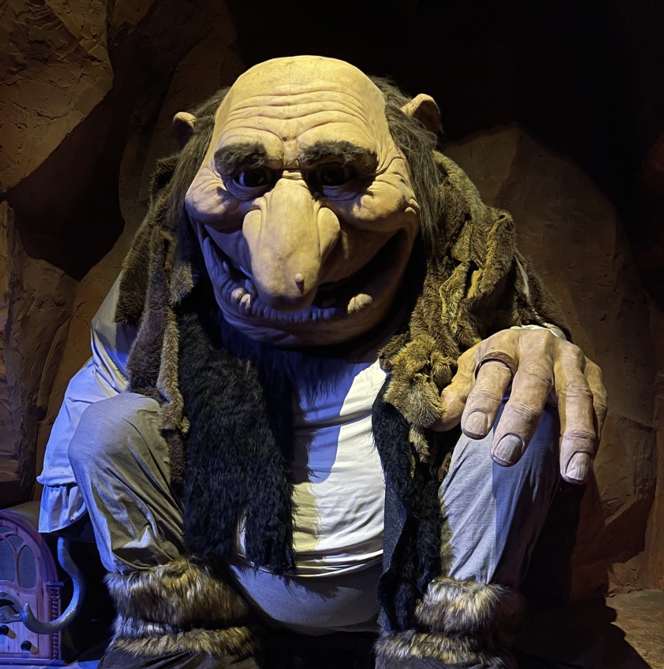
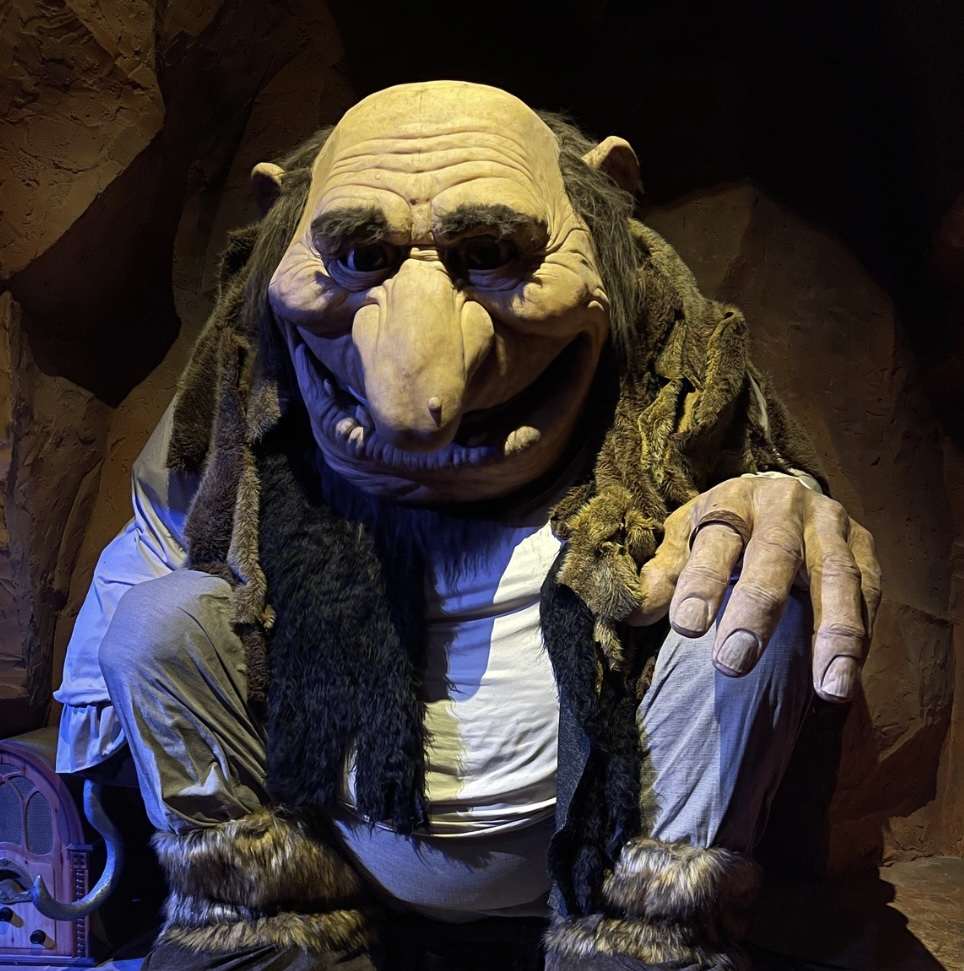

Inaugurado no dia 28 de dezembro de 1991, o parque Beto Carrero World contava com duas tendas de circo e alguns brinquedos infantis da época, muito diferente de hoje em dia, onde o parque conta com mais de 100 atrações.
João Batista Sergio Murad (Beto Carrero), sempre sonhou com o mundo mágico como é hoje, sempre teve muita ambição sobre o que se tornaria o parque, mas infelizmente teve seu trabaho interrompido após a sua morte no dia 1 de fevereiro de 2008 no hospital Sírio-Libanês em São Paulo por um choque cardiogênico. Seu sonho continuou a ser realizado por seu filho, Alex Murad, atual presidente do parque, que o fez crescer grandemente após sua partida. Com certeza Beto estaria muito orgulhoso de ver o trabalho que seu filho vem desenvolvendo no mundo mágico!
Ao longo dos anos o parque vem crescendo de forma surpreendente, desde 2008 muita coisa mudou lá dentro, brinquedos e cenários antigos, deram lugar a brinquedos e parcerias novas, como por exemplo a parceria do parque com a DreamWorks que traz toda a turma do Shrek, Kung-fu Panda, Madagascar e Trolls, com a Paramount Distribuition, o parque traz do fundo do oceano a turma do Bob Esponja, a Mattel que traz o emocionante espetáculo do HotWheels e sua nova área temática Nerf Mania, com dois brinquedos sendo o Spin Blast e o Super Soaker Splash, lojas e restaurantes.
Beto Carrero conta com mais de 100 atrações, dando oportunidades para todas as idades se
divertirem sem limites, o parque conta com áreas separadas e tematizadas, como por exemplo: a Cowboyland
antigamente conhecida como Velho Oeste, conta com duas atrações, sendo elas o Rebuliço e o Betinho 2D (cinema), assim também
como o Memorial do parque, onde contém vários ítens do proprio Beto como se fosse um museu, e, também tem a tenda
onde é apresentado um incrivel musical chamado O Sonho do Cowboy.
Ou a Triplikland, área infantil
do parque, que atualmente conta com a Roda Gigante, Baby Elefante, Xícaras Malucas e a Autopista (Carrinho Bate Bate).
Abaixo terá uma lista dos principais brinquedos radicais, infantis e família para você se divertir com sua família e amigos.
| Radicais | |
|---|---|
| Brinquedo | Altura |
| FireWhip | 1.30mt |
| Star Mountain | 1.20mt |
| Big Tower | 1.30mt |
| Rebuliço | 1.20mt |
| Spin Blast | 1.20mt |
| Infantis | |
|---|---|
| Brinquedo | Altura |
| Roda Gigante | Livre |
| Super Soaker Splash | 90cm |
| Autopista | 1.10mt |
| Xícaras Malucas | Livre |
| Baby Elefante | Livre |
| Brinquedos para a Família | |
|---|---|
| Brinquedo | Altura |
| Barco Pirata | 1.20mt |
| Raskapuska | 80cm |
| Betinho Carrero 2D | 1.10mt |
| Tigor Mountain | 95cm |
| Ferrovia Dino Magic | Livre |
Atualmente o parque conta com 6 shows em cartaz.
Excalibur: Show Medieval, pago a parte;
Acqua: Espetáculo circense de animais do fundo do oceano;
Madagascar Circus Show: Espetáculo cirsence com toda a turma do filme Madagascar;
Hotwheels Epic Show: Apresenação de tirar o fôlego com carros;
O Sonho do Cowboy: Grande Musical que conta o sonho do Cowboy brasileiro;
No Ritmo de Trolls: Apresentação final com direito a muita dança e show de fogos para encerrar o dia.